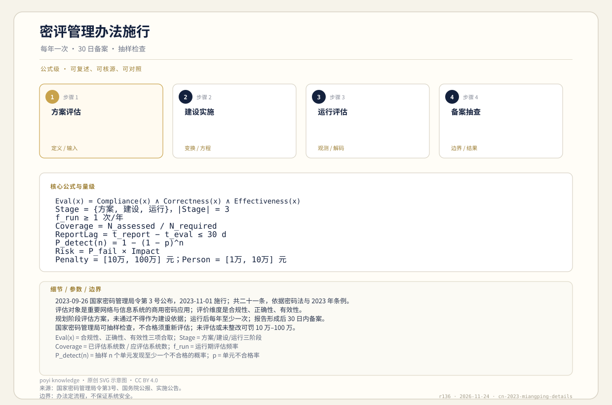

原理与机制
中国密码史：密评管理办法施行（Cryptography Assessment Measures in Effect）。《商用密码应用安全性评估管理办法》是密码法第 27 条和 2023 年《商用密码管理条例》第 38 条的配套部门规章。2023 年 9 月 11 日国家密码管理局局务会议审议通过，9 月 26 日以国家密码管理局令第 3 号公布，11 月 1 日施行，共二十一条。第 2 条定义密评：按照法律法规和标准规范，对网络与信息系统使用商用密码技术、产品和服务的合规性、正确性、有效性进行检测分析和评估验证。第 4 条要求向社会出具证明性密评结果的机构取得商用密码检测机构资质。第 7 条要求规划阶段评估应用方案，未通过不得作为建设依据；第 8 条要求建设阶段按通过评估的方案实施；第 9 条要求建成运行后每年至少一次密评，未通过应改造。第 14 条要求评估报告形成后 30 日内报送备案，密码管理部门做形式审查；第 15 条允许国家密码管理局对评估结果抽样检查，不合格应重新评估；第 17 条对未评估、未整改等设定 10 万–100 万元罚款，对直接责任人 1 万–10 万元。把流程写成 Stage={方案,建设,运行}，把评价写成 Eval=合规∧正确∧有效，就能把“密评”从口号变成可执行状态机。

为什么重要
密评制度解决的是“商用密码用了没有、用得对不对、有没有效”三个问题。密码法和条例只规定 KII 等必须使用商用密码并开展评估，但不说怎么评；密评办法补上了方案评估、建设实施、运行评估、报告备案和抽样检查的操作链。它也是“放管服”后监管能力的支点：事前审批减少后，监管部门不能靠发许可证控制风险，只能靠标准、检测认证、密评和事中事后抽查。密评把安全责任压回运营者：运营者要自己或委托机构评估，提交报告，接受抽样；评估机构要取得资质，对数据结果负责。
应用与实例
密评的实操顺序是：1）规划阶段编制商用密码应用方案，评估未通过不得作为建设依据；2）建设阶段按通过评估的方案实施，落实密码保障措施；3）建成运行后每年至少一次密评，未通过则改造，改造期间不得投入运行；4）报告形成后 30 日内备案，接受形式审查；5）国家或省级密码管理部门抽样检查，不合格重新评估。可以用四个字段记录：Stage（方案/建设/运行）、Eval（合规/正确/有效）、Coverage（已评估/应评估）、ReportLag（报告滞后天数）。这四个字段既可用于项目管理，也可用于监管台账。
边界与攻击面
密评的边界有三层。第一，它不是一次性认证：系统改造、业务变化、算法/密钥/接口变更都可能改变风险，需要重新评估；办法要求运行后每年至少一次，说明它是持续义务。第二，它不是“测评机构背书就万事大吉”：运营者仍对系统安全负责，测评报告只是合规性、正确性、有效性的证据。第三，抽样检查有概率漏检：P_detect(n)=1-(1-p)^n 说明样本越少、单元不合格率越低，发现概率越低；抽样合格不等于全体合格。此外，密评不能替代密码法、条例、网络安全等级保护、KII 安全检测评估；它是商用密码应用的一条专门评估线，需要与其它评估衔接，避免重复但不能互相替代。
历史与背景
2023 年 9 月 11 日国家密码管理局局务会议审议通过；9 月 26 日以第 3 号令公布；11 月 1 日施行。10 月 31 日，国家密码管理局发布实施公告，要求有意继续从事密评业务的试点机构在 11 月 30 日前提交商用密码检测机构资质申请；未经认定，任何单位不得面向社会开展密评业务。这部办法与 2023 年《商用密码管理条例》同日施行，形成“法律—条例—办法—标准”的密评制度链：密码法定义务，条例定关键环节，办法定流程，标准定测评方法。
逐步示例与核验
事件时间线模型
背景 → 过程 → 结果 → 争议。背景写此前技术/制度；过程写可核参与者与时间；结果写后续标准、机器、课程或政策；争议写二手叙述与一手材料的差距。
参考出处
- Wikipedia search entry for 密评管理办法施行. https://zh.wikipedia.org/w/index.php?search=%E5%AF%86%E8%AF%84%E7%AE%A1%E7%90%86%E5%8A%9E%E6%B3%95%E6%96%BD%E8%A1%8C
- 《密码简史：穿越远古 展望未来》（杨义先、钮心忻，电子工业出版社，2020，ISBN 9787121398711）. https://book.cppinfo.cn/Encyclopedias/home/index?id=3730464